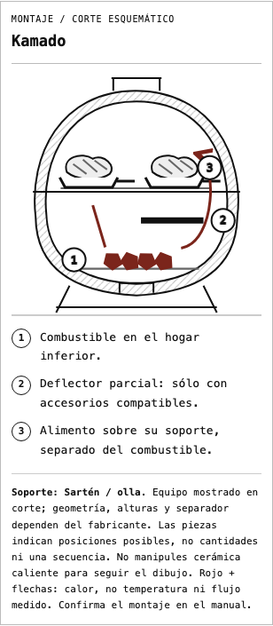
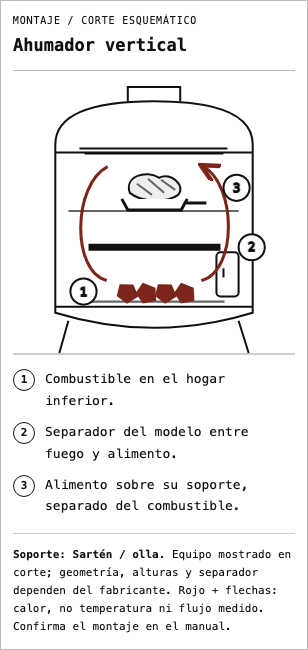
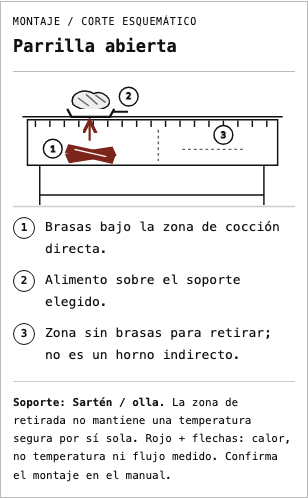

5 octubre 2026 · Vista local · Sin publicación.
Extiende el lenguaje visual del piloto aprobado a kamado, ahumador vertical y parrilla abierta. Preserva las tres familias del piloto, almacenamiento, validaciones y cálculos. No cambia la identidad ni el contenido de las infografías del Almanaque.
Los soportes se integran según la selección. Una bandeja de alimento no sustituye el deflector. Los dibujos no fijan alturas, cantidades de combustible ni temperaturas. No se representa un alimento cuando el soporte está sin definir.
Prueba reproducible: portal/scripts/check-planner-diagrams.py. Matriz de 44 recorridos: 11 configuraciones por cuatro anchos (320, 390, 768 y 1440 px), guardado, modal, leyenda, separadores, desbordamientos e identificadores SVG únicos. TypeScript, compilación y ocho pruebas del modelo verificados. Se revisan capturas móviles y CSS de impresión; no se certifica paginación física de PDF en esta revisión.
Límites conservados: offset directo/combinado sigue con el esquema anterior condicionado al modelo; pausas siguen siendo texto explicativo sin fuego. El acceso flotante global del Almanaque mantiene la incidencia de superposición registrada en la auditoría v4. Se oculta sólo para las capturas aisladas.



Ilustraciones propias conceptuales; las fuentes respaldan la disposición general, no homologan estos dibujos como manual de un equipo específico.